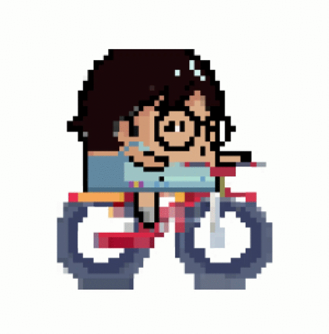

{kind=link}
The Player¶
For the purpose of an easier modular approach. The Player’s implementation has been divided into two scripts:
PlayerControlwhich solely handling player’s horizontal and vertical movements.PlayerStatuswhich handling the player’s properties including health, running distance score, invincibility and amount of buffs collected.
PlayerStatus¶
The manipulation of the status has primarily based on the event handling system, which has been discussed in the previous section. In this section, we focus more on the actual handler functions.
All player status properties have been declared as static field variable at the top and initialised in the Start() method:
// static fields to describe the player's current condition
public static float Health;
public static int Score;
public static bool Invincible;
// power buff collection and miss count
public static int BuffCollectedCount;
public static int BuffMissedCount;
...
void Start() {
// initialise player health with 3 hearts
Health = 3;
// initialise player invincibility mode with false
Invincible = false;
BuffCollectedCount = 0;
BuffMissedCount = 0;
TotalPlayTime = 0;
...
}
Health & Death¶
After subscribing to the listening to the HealthChangedEvent, we define the actual health handler, the deduction will only trigger when the player is not in Invincible mode:
private void HandleHealthChangedEvent(float damage) {
// only deduct health when the player is not invincible
if (!Invincible) {
// don't go below zero in health
Health = Mathf.Max(0, Health - damage);
}
}
Note
As you can see, the function is taking in a float argument which is the health point deducted when triggering the event. This number will be passed in the invoker when the event happens.
We also define the game over handler, which stores the result and go to score page:
private void HandleGameOverEvent(float unused) {
GameSession.ScoreResult = Score;
GameSession.TimeResult = (int) TotalPlayTime;
GameSession.BuffCollectedResult = BuffCollectedCount;
GameSession.BuffMissedResult = BuffMissedCount;
MenuManager.GoToMenu(MenuName.ScorePage);
}
The event triggers when colliding with a Vehicle object. In the Vehicle script we define the OnTriggerEnter2D function as follow. 1 health point will be deducted as the event fires, if the health point reaches 0, trigger the game over event. As you can see that the event invoking requires a float argument passing in which is corresponding to the float argument of HandleHealthChangedEvent function above:
protected override void OnTriggerEnter2D(Collider2D coll) {
if (coll.gameObject.CompareTag("Player")) {
// deduct the health by 1
UnityEvents[EventName.HealthChangedEvent].Invoke(1.0f);
// check for game over
if (PlayerStatus.Health == 0) {
UnityEvents[EventName.GameOverEvent].Invoke(0);
}
}
base.OnTriggerEnter2D(coll);
}
Speed Up & Timer¶
The speed-up event triggers when colliding with the bicycle object. The implementation requires two functionalities: the speed up and timer to calculate whether the buff time has expired. These have been done by the following two handlers. The HandleSpeedUpEffectEvent handler boosts the player movement speed, turn the player into an invincible mode, change the sprite of the player to bicycle riding mode and switch the 2D collider’s isTrigger property to false thus the player has a real collider volume to crash the vehicles away.
private void HandleSpeedUpEffectEvent(float factor) {
// set invincibility mode to true thus player will not deduct health during invincible mode
Invincible = true;
// Player movement speed set to buffed state
PlayerControl.HoriMvtState = HoriMvtState.Buffed;
// change the sprite animation to riding bicycle in the animator
_animator.SetBool("OnBicycle", Invincible);
// set isTrigger property to false so the player can crash away the car and bus
_capColl2D.isTrigger = false;
// start the buff timer and exit buffed mode after buff duration
_buffTimer.Run();
}
At the end of the function, we start the timer running, and after a buffer duration, we shut it down. We actualise this by subscribing to the timer invoker, and let the buff timer instance listen to the HandleBuffTimerFinishedEvent handler after the buff time has finished:
void Start() {
...
// access to the invoker class by getting the CustomerTimer component from the game object
_buffTimer = gameObject.AddComponent<CustomTimer>();
_buffTimer.Duration = ConfigUtils.BuffDuration;
_buffTimer.AddTimerFinishedEventListener(HandleBuffTimerFinishedEvent);
...
}
The actual timer finish handler has been declared as follow, the player exit the invincible mode, the sprite has been changed back to running, the 2D collider’s isTrigger property switches back to true thus the player will no longer have a collision volume, and will go through other objects when colliding and lastly change the horizontal moving state back to normal.
private void HandleBuffTimerFinishedEvent() {
Invincible = false;
// change the sprite animation to riding bicycle in the animator
_animator.SetBool("OnBicycle", Invincible);
// set isTrigger property back to true thus the player won't physically interact with vehicles
_capColl2D.isTrigger = true;
// Player movement speed set back to normal state
PlayerControl.HoriMvtState = HoriMvtState.Normal;
}
The event triggers when colliding with a BicycleBuff object. In the BicycleBuff script we define the OnTriggerEnter2D function as follow. We trigger the event by invoking the SpeedUpActivatedEvent``and increment the ``BuffCollectedCount property of the PlayerStatus class.
protected override void OnTriggerEnter2D(Collider2D coll) {
if (coll.gameObject.CompareTag("Player")) {
// TODO: this float argument here is actually unused, make it useful
UnityEvents[EventName.SpeedUpActivatedEvent].Invoke(ConfigUtils.BuffDuration);
// add to buff collected count when the buff destroys due to being collected
PlayerStatus.BuffCollectedCount++;
// buff object disappears after the player collects it
Destroy(gameObject);
}
}
Sprites Manipulation¶
The pixel art style Elingling avatar extracted the most significant features from Elina’s portrait, the glasses, the hairstyle and the overall cute looking.

Elingling vs Elina
When switching horizontal movement state, the sprite has to switch to corresponding ones. This has been accomplished using the Unity Animator. The transition logic between animations is simply actualised by manipulating the OnBicycle boolean variable which has been shown in the above functions.

Unity Animator
Then the sprites can swtich between the following two animations correspondingly:
| Running | Cycling |
 |
 |
Player Control¶
The implementation of player control starts with defining enumerations of horizontal and vertical states in separate files:
// An enumeration of the horizontal movement states
public enum HoriMvtState {
Normal,
Buffed
}
// An enumeration of the vertical movement states
public enum VertMvtState {
MovingDown,
MovingUp,
Still
}
Then we initialise the vertical movement states of the player as Still and horizontal movement state as Normal respectively.
public static VertMvtState VertMvtState;
public static HoriMvtState HoriMvtState;
...
void Start() {
...
// initialise the vertical movement state with still where the player keeps the altitude
VertMvtState = new VertMvtState();
VertMvtState = VertMvtState.Still;
// initialise the horizontal movement state with normal where the player keeps steady speed
HoriMvtState = new HoriMvtState();
HoriMvtState = HoriMvtState.Normal;
...
}
Vertical Movement¶
The actual effect of switching between vertical movement states has been handled by VertMvtHandler function utilising the unity transform.Translate() built-in function
private void VertMvtHandler() {
switch (VertMvtState) {
case VertMvtState.MovingDown:
transform.Translate(
-Vector3.up * _vertSpeed * Time.deltaTime,
Space.World);
break;
case VertMvtState.MovingUp:
transform.Translate(
Vector3.up * _vertSpeed * Time.deltaTime,
Space.World);
break;
case VertMvtState.Still:
// stop only the vertical speed by setting the vertical component to 0
transform.Translate(
Vector3.up * 0,
Space.World);
break;
default:
//transform.position = gameObject.transform.position;
transform.Translate(
Vector3.up * 0,
Space.World);
break;
}
}
In order to prevent the player from moving outside the screen boundaries, we introduce a clamping position function:
private void CalculateClampedY() {
// remember to add z pos, if using Vector2, the z pos will go back to 0
// where the player will be behind the background
Vector3 playerPos = transform.position;
if (playerPos.y > _playerMvtUpperLimit || playerPos.y < _playerMvtLowerLimit) {
playerPos.y = Mathf.Clamp(
playerPos.y,
_playerMvtLowerLimit,
_playerMvtUpperLimit);
transform.position = playerPos;
The actual player control follows two discipline: keyboard control or phone controls. The program will detect first which platform the game is currently running on. The Phone version of the game utilises the accelerometer of the phone. When the phone has been tilting over a certain degree, the player will go towards the up direction and vice versa while the keyboard version follows the most basic simple control of using w and s to control the avatar to move up and down.
void Update() {
// using phone gyroscope & accelerometer input when running as phone apps
if (Application.platform == RuntimePlatform.Android ||
Application.platform == RuntimePlatform.IPhonePlayer) {
PhoneSensorControl();
} else {
// using keyboard vertical input axis when running on any other platform
KeyboardControl();
}
VertMvtHandler();
HoriMvtHandler();
CalculateClampedY();
}
// ----- Phone Sensor Control -----
private void PhoneSensorControl() {
if (Input.acceleration.y < -0.60) {
VertMvtState = VertMvtState.MovingDown;
} else if (Input.acceleration.y > -0.25) {
VertMvtState = VertMvtState.MovingUp;
} else {
VertMvtState = VertMvtState.Still;
}
}
// ----- Keyboard Control -----
private void KeyboardControl() {
if (Input.GetKey(KeyCode.S)) {
VertMvtState = VertMvtState.MovingDown;
} else if (Input.GetKey(KeyCode.W)) {
VertMvtState = VertMvtState.MovingUp;
} else {
VertMvtState = VertMvtState.Still;
}
}
Horizontal Movement¶
The horizontal movement simply utilises the unity transform.Translate() built in function:
private void HoriMvtHandler() {
switch (HoriMvtState) {
case HoriMvtState.Normal:
transform.Translate(Vector3.right * _horiSpeed);
break;
case HoriMvtState.Buffed:
transform.Translate(Vector3.right * _horiSpeed * _buffFactor);
break;
}
}
The movement function has not much to discuss, what interesting is if the player runs towards the right of the screen, how to keep it always on the screen. This functionality has been accomplished in EnvObjLoop script which has been attached to the main camera. We create an instance of the player in the script and let the camera keep tracking of the player’s position:
public class EnvObjLoop : MonoBehaviour {
...
[SerializeField] private GameObject _player;
...
void Update() {
// let the camera follow the player and locate the player at x = -5 of the screen
transform.position = new Vector3(
_player.transform.position.x + 5,
transform.position.y,
transform.position.z);
}
...
}
Z-Position of the Sprites¶
A weird scenario of smaller objects (player and soldier) run on top of the larger objects (vehicles) arises when the objects run into each other. In this case, the smaller object should be behind the larger object, however, it runs on top since the z-position of the smaller object is closer to the camera than the larger one. In order to tackle this problem, we add one child class in between the FloatEventInvoker and the SpawnObj -> the ZPosChangeable class.
In this class, we set all vehicles spawned to be originally at the same level of z-position and determine the player and soldier sprite’s z-pos by comparing with the colliding vehicle objects, and if its position should look closer to the camera, we set its z-position closer to the camera than the vehicles.
protected virtual void OnTriggerEnter2D(Collider2D coll) {
// only affect the player and the soldiers
if (gameObject.name == "Player" || gameObject.name == "Soldier(Clone)") {
// when the Player's or Soldier's center y-pos is lower than
// - Bus's center y-pos by more than 1 unit
// - Car's center y-pos by more than 0.25 units
if ((coll.gameObject.name == "Bus(Clone)" &&
transform.position.y < coll.transform.position.y - 1.0f) ||
(coll.gameObject.name == "Car(Clone)" &&
transform.position.y < coll.transform.position.y - 0.25f)) {
// set z-pos of player to closer than the vehicles
transform.position = new Vector3(transform.position.x, transform.position.y, -3);
}
}
}
When the smaller object’s collider leave the larger object’s collider, we set its z-position back to original:
void OnTriggerExit2D(Collider2D coll) {
// only affect the player and the soldiers
if (gameObject.name == "Player" || gameObject.name == "Soldier(Clone)") {
if (coll.gameObject.CompareTag("Vehicle")) {
transform.position = new Vector3(transform.position.x, transform.position.y, -1);
}
}
}